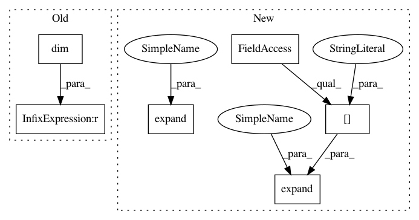

4203fde78e0522513258a60466f1575e161b9138,gpytorch/variational/variational_strategy.py,VariationalStrategy,forward,#VariationalStrategy#Any#,94
Before Change
variational_dist = self.variational_distribution.variational_distribution
inducing_points = self.inducing_points
if inducing_points.dim() < x.dim():
inducing_points = inducing_points.expand(*x.shape[:-2], *inducing_points.shape[-2:])
variational_dist = variational_dist.expand(x.shape[:-2])
After Change
if inducing_points.shape[:-2] < x.shape[:-2]:
batch_shape = _mul_broadcast_shape(inducing_points.shape[:-2], x.shape[:-2])
inducing_points = inducing_points.expand(*batch_shape, *inducing_points.shape[-2:])
x = x.expand(*batch_shape, *x.shape[-2:])
variational_dist = variational_dist.expand(batch_shape)
// If our points equal the inducing points, we"re done
if torch.equal(x, inducing_points):
return variational_dist
In pattern: SUPERPATTERN
Frequency: 3
Non-data size: 6
Instances
Project Name: cornellius-gp/gpytorch
Commit Name: 4203fde78e0522513258a60466f1575e161b9138
Time: 2019-04-11
Author: gpleiss@gmail.com
File Name: gpytorch/variational/variational_strategy.py
Class Name: VariationalStrategy
Method Name: forward
Project Name: cornellius-gp/gpytorch
Commit Name: 80bfc0e92ca2a52621414fb4de5cc8a2bb5474b6
Time: 2019-04-12
Author: gpleiss@gmail.com
File Name: gpytorch/variational/variational_strategy.py
Class Name: VariationalStrategy
Method Name: forward
Project Name: cornellius-gp/gpytorch
Commit Name: 4203fde78e0522513258a60466f1575e161b9138
Time: 2019-04-11
Author: gpleiss@gmail.com
File Name: gpytorch/variational/variational_strategy.py
Class Name: VariationalStrategy
Method Name: forward
Project Name: cornellius-gp/gpytorch
Commit Name: d4e602e3f75b5599f08083d862205dc333a17c3e
Time: 2019-11-25
Author: gpleiss@gmail.com
File Name: gpytorch/kernels/grid_interpolation_kernel.py
Class Name: GridInterpolationKernel
Method Name: forward